Pour plus de détail sur l'anatomie d'une application Play!>, allez faire un tour par là : http://www.playframework.org/documentation/2.0.1/Anatomy
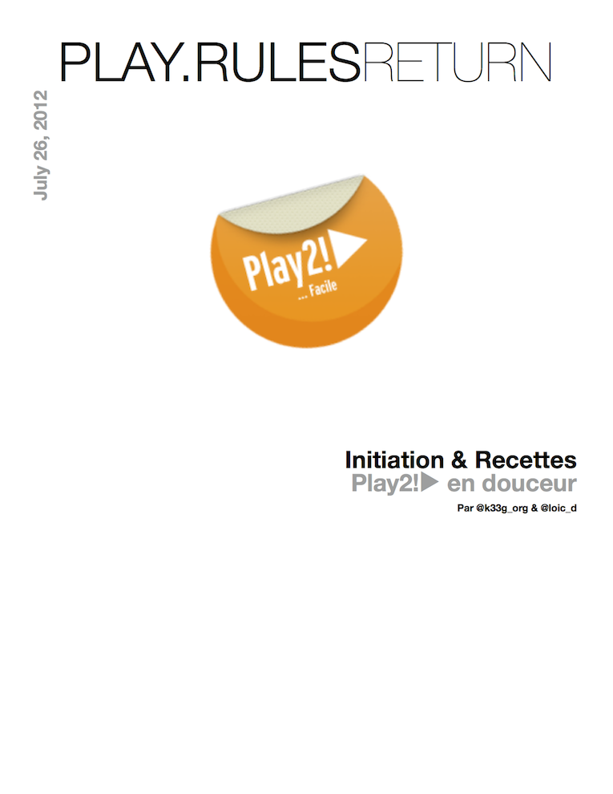
//TODO: à compléterCe livre est conçu et écrit par @k33g_org et @loic_d (nos petits noms sur Twitter). Il est complètement open source. Faites en ce que vous voulez. Vous pouvez participer par le biais des pull requests et issues du repository GitHub : https://github.com/3monkeys/play.rules (répertoire : livre.play.deux), si vous détectez des fautes, avez des idées, des remarques; etc. ...
Si cet e-book vous plaît, n'hésitez pas à nous le faire savoir (nous faisons ça sur notre temps personnel de façon purement bénévole).
//TODO//TODOA l'heure actuelle, ce livre est encore incomplet. Cependant nous essayons de lui conserver une certaine structure et de ne publier que des choses utilisables : vous n'aurez pas de chapitres qui ne servent à rien (l'e-book est regénéré uniquement dans le cas d'un ajout d'un chapitre complet ou de correction).
Donc, beaucoup de TODO mais quand même du contenu pour "s'y mettre".
En espérant que cet e-book vous serve & vous fasse aimer Play2!>;.
Les premiers chapitres traitent de la version Java de Play2!>;, mais la version Scala sera elle aussi abordée.
//TODO: ...version de Play!> utilisée : 2.0.1
Qu'allons nous voir ? ... Installation de Play2!>
- sous OSX
- sous Linux
- sous Windows
Ensuite, il faut modifier votre path.
Dans une console (Terminal), tapez la commande suivante :
sudo pico ~/.bash_profilePuis ajoutez la ligne suivante dans votre fichier de configuration :
export PATH=$PATH:/endroitOuVousAvezDezippePlay/play-2.0.1Sauvegardez (sous pico, c'est Ctrl+o) et quittez l'éditeur, fermez votre Terminal.
où endroitOuVousAvezDezippePlay est le chemin vers Play!> et play-2.0.1 le nom du répertoire dans lequel il y a les éléments constitutifs du framework (je laisse le numéro de version car il m'arrive de travailler sur plusieurs versions).
Dans une console (Terminal), tapez la commande suivante :
vi ~/.profilePuis ajoutez les lignes suivantes à la fin de ce fichier :
export PLAY_HOME=/endroitOuVousAvezDezippePlay/play-2.0.1
export PATH=$PLAY_HOME:$PATHSauvegardez et quittez l'éditeur (sous vi, c'est ESCAPE, :, wq), fermez votre console.
où endroitOuVousAvezDezippePlay est le chemin vers Play!> et play-2.0.1 le nom du répertoire dans lequel il y a les éléments constitutifs du framework (je laisse le numéro de version car il m'arrive de travailler sur plusieurs versions).
Modifier les variables d'environnement de Windows, via Panneau de configuration\Système et sécurité\Système, puis Paramètres systèmes avancés sur la gauche. Dans la boîte de dialogue qui s'affiche, cliquer le bouton Variables d'environnement... en bas.
Ajouter une nouvelle Variable système :
PLAY_HOMEendroitOuVousAvezDezippePlay\play-2.0.1Puis modifier la valeur de la variable Path en ajoutant %PLAY_HOME%; au début (ne pas oublier le ';' !).
Cliquer sur tous les boutons OK pour fermer les différentes boîtes de dialogue.
Nous allons vérifier la bonne installation du framework. Ouvrez une nouvelle fois votre Console ou Terminal (il faut que cela soit une nouvelle session pour la prise en compte de la modification du path), et tapez la commande suivante :
play helpCela "mouline" un peu car Play2!> télécharge quelques dépendances. Vous devriez obtenir ceci :
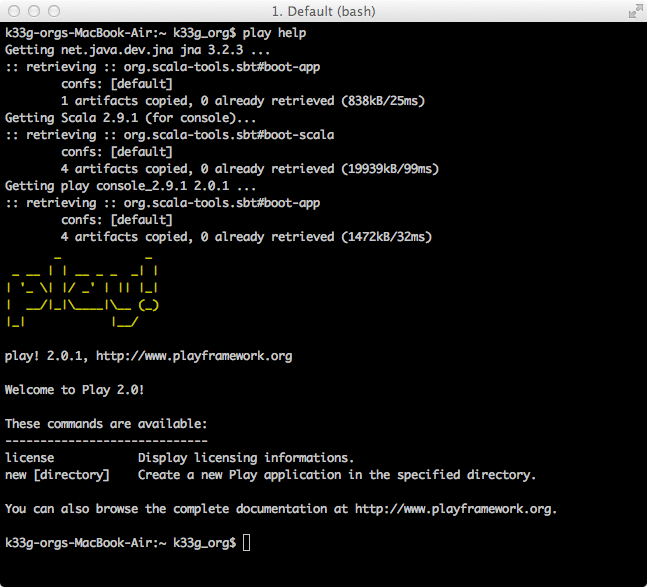
Voilà c'est prêt, nous pouvons commencer.
Qu'allons nous voir ?
- Comment générer le squelette de notre future application
- Comment lancer l'application
... jusque là, ça va ;)
cd mon_repertoire_de_travail)play new bookmarksPlay!> vous propose un nom par défaut pour votre application : acceptez
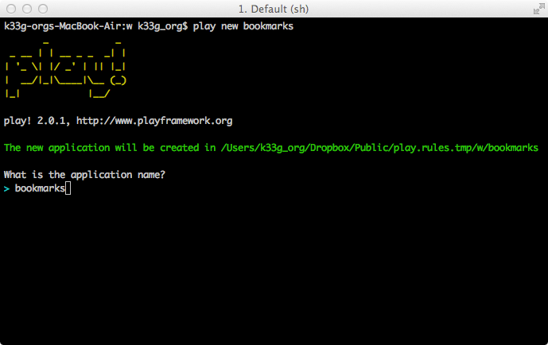
Play!> vous demande quel type de projet vous souhaitez générer, choisissez la version Java (deuxième choix donc) et validez :
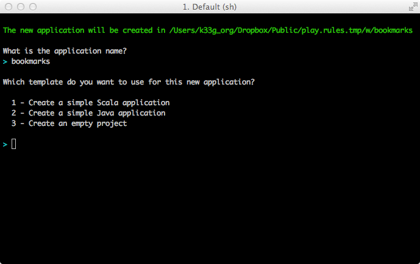
C'est terminé :
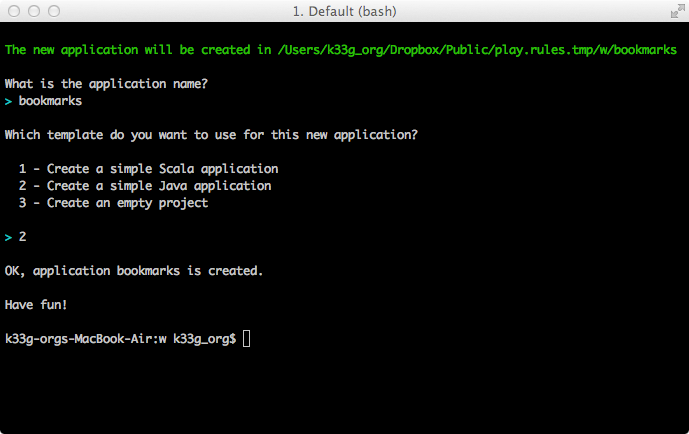
Si vous aller jeter un coup d'oeil dans votre répertoire, vous pourrez vérifier que Play!> a généré toute l'arborescence applicative nécessaire :
Pour plus de détail sur l'anatomie d'une application Play!>, allez faire un tour par là : http://www.playframework.org/documentation/2.0.1/Anatomy
Lançons donc notre application pour être réellement sûr que nous avons tout ce qu'il faut. pour cela, tapez les commandes :
cd bookmarks
playLa première fois, cela risque de prendre du temps, car Play!> télécharge divers éléments dont il a besoin pour fonctionner. Patientez un peu. Vous arrivez ensuite sur un "prompt" qui prend le nom de votre application [bookmarks] :
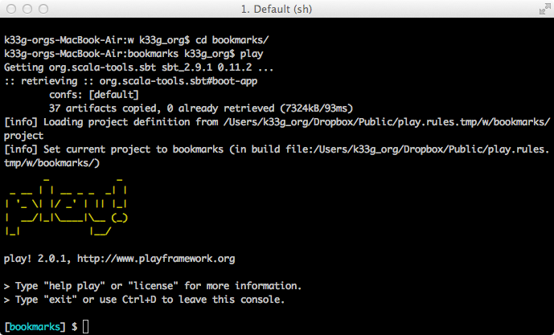
Tapez run et validez :
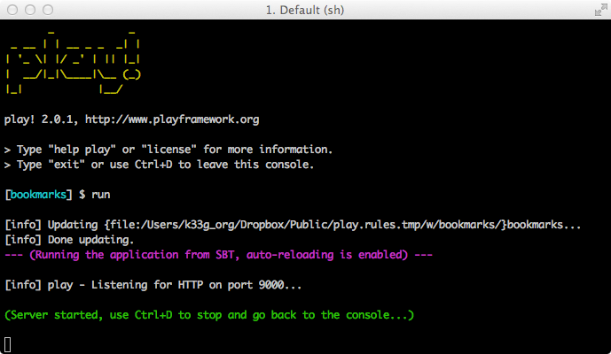
Vous pouvez lire que Play!> a démarré une application web sur laquelle vous pouvez vous connecter via http://localhost:9000. Allons-y. En parallèle, côté serveur, ça compile :
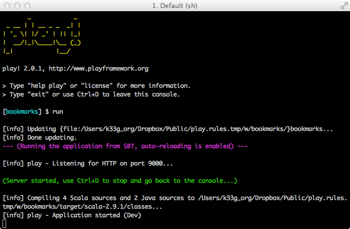
Et au bout de quelques instants, si tout va bien, vous obtenez cette page dans votre navigateur :
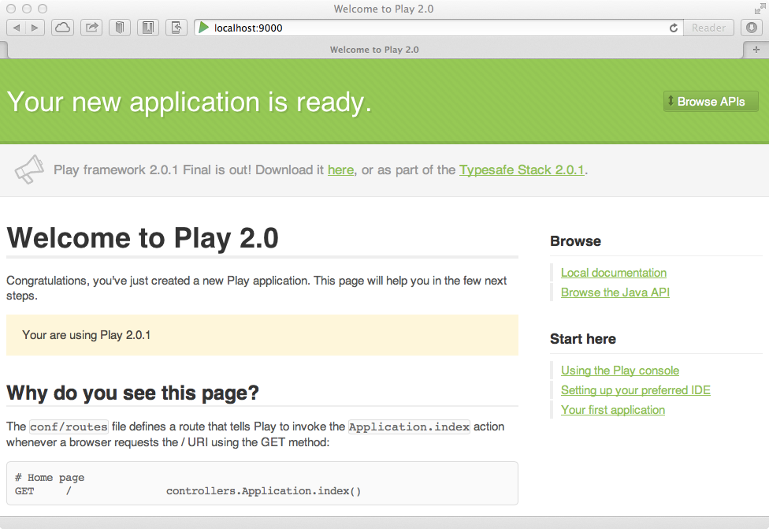
Qu'allons nous voir ?
- Comment paramétrer un IDE pour "bosser" facilement avec Play2!>
Pour le moment je ne parle que d'IntelliJ. Sachez cependant qu'avec un peu d'habitude, il est possible de "faire du Play" avec un bon éditeur de texte comme SublimeText, UltraEdit, Notepad++, TextMate, ...
Nous avons donc une installation de Play2!> et un squelette d'application opérationnels. Avant d'aller plus loin, nous allons paramétrer un IDE pour nous faciliter le développement (il est aussi possible d'utiliser un simple éditeur de texte). Play!> peut fonctionner avec plusieurs IDE :
Je vous propose d'utiliser la version Community d'IntelliJ (qui semble faite pour Play!>), qui a l'avantage d'être gratuite et puissante à la fois. Pour les autres IDE, allez faire un tour sur le site de Play!>, tout est expliqué.
//TODO : liens etc ...Pour cela nous devons transformer notre arborescence projet en "module IDEA". Tout d'abord, arrêtez votre application : faites un Ctrl+c, puis relancez Play!> : play (vous êtes toujours dans le répertoire de votre application). Une fois que vous êtes revenu au prompt [bookmarks], tapez la commande idea et validez. Vous obtenez ceci :
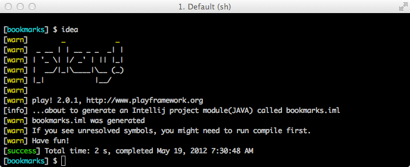
Play!> a généré dans le répertoire de l'application un fichier bookmarks.iml.
Passons au paramétrage du projet :
IntelliJ va vous afficher une fenêtre "Project Structure" :
Vous devriez obtenir l'écran suivant (si vous avez tout fait comme il faut) :
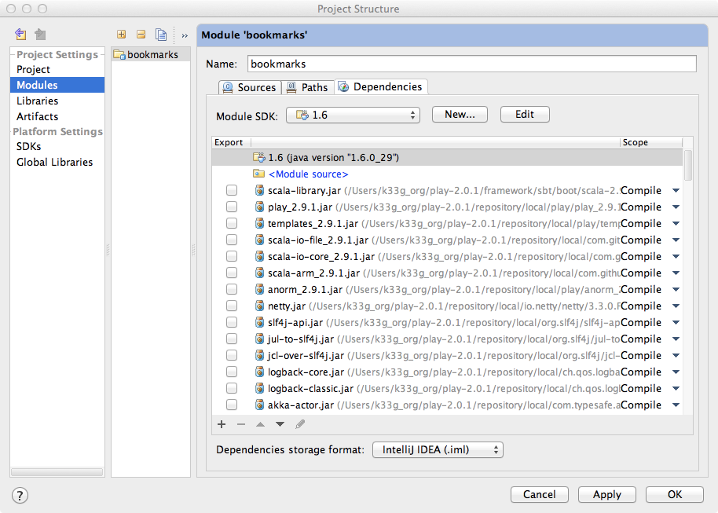
Cliquez sur "OK". Votre projet est prêt :
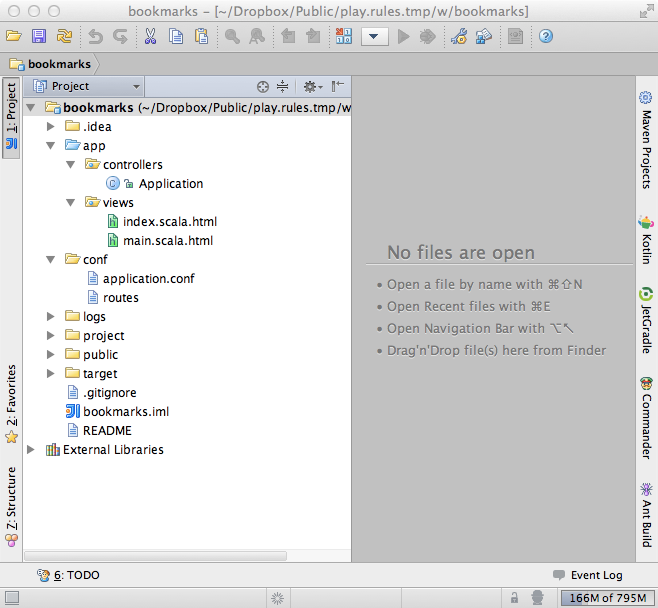
Nous sommes enfin prêts à commencer.
Si vraiment vous souhaitez utiliser un autre IDE, c'est expliqué ici : https://github.com/playframework/Play20/wiki/IDE
Qu'allons nous voir ? ... Comment paramétrer notre application
- déclarer la base de données embarquée proposée par Play!>
- créer nos premiers modèles
- créer nos premiers contrôleurs, les modifier
- paramétrer "les routes"
- créer notre première vue
... faites vous un bon café, et soyez attentif, cela devient sérieux.
Plutôt que d'utiliser la commande run vous pouvez utiliser ~run et à ce moment là Play!> compile à la volée dès qu'il détecte un changement dans le code. Cela va accélérer grandement votre travail (merci à @kraco_fr pour ça, j'étais prêt à mettre Play!> en pause tellement la compilation était devenue lente et là c'est que du bonheur.)
//TODO : expliquer ce que va faire l'applicationTout d'abord, nous avons besoin d'une base de données. Nous allons aller au plus simple : Play!> "embarque" une base de donnée "H2 Database" (http://www.h2database.com/html/main.html) qui est une base de donnée rapide, légère, qui peut même fonctionner en mémoire et qui respecte les standards JDBC. Cela signifie que vous pouvez facilement prototyper vos applications avec cette base de données pour ensuite changer de base de manière transparente.
Pour définir notre base, allons faire un tour dans le fichier conf/application.conf et au niveau de la section # Database configuration ajoutons ceci :
db.default.driver=org.h2.Driver
db.default.url="jdbc:h2:file:play"Nous avons donc expliqué à Play!>, que nous souhaitions utiliser la base de données "H2 Database" en mode fichier. Comme cela toutes nos modifications seront sauvegardées.
Dans un premier temps :
models dans app car cela n'est pas fait automatiquement (pour le moment ?) (dans IntelliJ, utilisez la fonction "New Package" sur le répertoire app et appelez le models)# Ebean configuration : Dé commentez la ligne : ebean.default=models.*Remarque : Play!> 2 utilise Ebean comme framework de persistance au lieu de Hibernate+JPA (comme le faisait Play!> v1). Ebean est un ORM Java qui continue à utiliser les annotations JPA (
@entity,@OneToMany, ...) pour le mapping et qui propose une API plus simple (en tous les cas plus moderne) et qui a la particularité d'être "sessionless".
//TODO : expliquer sessionlessNous allons étudier ça par l'exemple.
Créez une classe Category.java dans app/models :
package models;
import play.db.ebean.Model;
import javax.persistence.*;
@Entity
public class Category extends Model{
@Id
public Long id;
public String label;
public static Finder<Long, Category> find =
new Finder<Long, Category>(Long.class, Category.class);
}Remarque : Nous avons eu besoin d'importer
play.db.ebean.Modelpour pouvoir persister nos modèles,javax.persistence.*pour pouvoir utiliser les annotations. Nous avons fait précéder notre classe de l'annotation@Entityet hériter deModelpour pouvoir bénéficier des fonctionnalités de persistance. Et l'utilisation de l'annotation@Idnous permet de définir que la clé du modèle en base de données estid. Notez le membrefindde typeFinder,Finderest un type "apporté" per Ebean, il nous permettra d'interroger nos modèles.
Redémarrez dès maintenant l'application et connectez vous à http://localhost:9000/ avec votre ordinateur.
Play!> détecte (c'est un peu long, je vous l'accorde) que vous avez créé un modèle et vous propose donc de créer le modèle de données (la table category dans notre cas) :
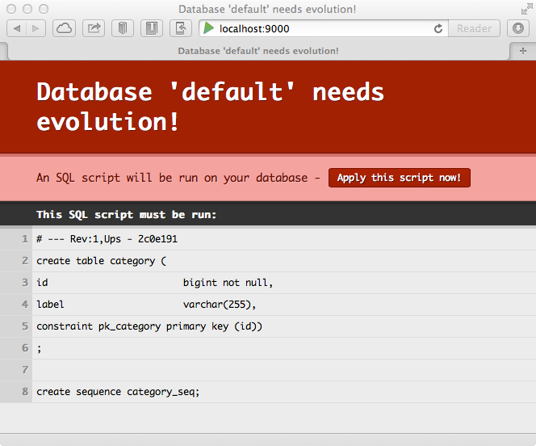
Cliquez sur "Apply this script now !" pour créer la structure de données dans la base. ... Et votre base de données est ainsi créée.
De la même manière, créez un modèle Bookmark :
package models;
import play.db.ebean.Model;
import javax.persistence.*;
@Entity
public class Bookmark extends Model {
@Id
public Long id;
public String title;
public String url;
public String details;
@ManyToOne
public Category category;
public static Finder<Long, Bookmark> find =
new Finder<Long, Bookmark>(Long.class, Bookmark.class);
}Remarques : Notez l'annotation
@ManyToOne: nous expliquons à Play!> qu'unBookmarkpeut appartenir à plusieursCategory(ies).
Vous venez de créer un nouveau modèle, il est temps de "rafraîchir" à nouveau votre application. Play!> détecte la modification et vous propose encore une fois d'appliquer le script pour modifier la base de données. Acceptez :
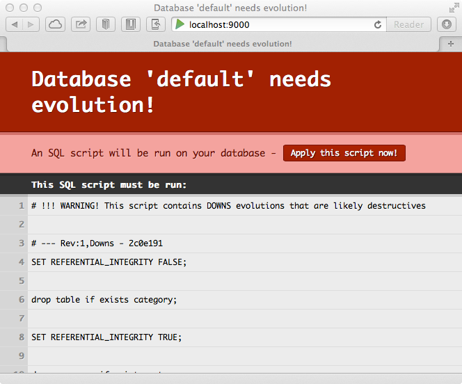
A ce stade, nous avons nos modèles et une base de données. mettons en oeuvre la suite de notre mécanique pour pouvoir bientôt jouer justement avec ces modèles.
Par convention, nous nommons un contrôleur d'un modèle avec le nom du modèle au pluriel, par exemple : Bookmarks pour le contrôleur du modèle Bookmark (en même temps, si vous avez envie de le nommer BookmarksController, rien ne vous en empêche).
Dans /app/controllers/ créez la classe Bookmarks.java :
package controllers;
import models.Bookmark;
import play.data.Form;
import play.mvc.Controller;
import play.mvc.Result;
public class Bookmarks extends Controller {
public static Result add() {
final Form<Bookmark> bookmarkForm = form(Bookmark.class).bindFromRequest();
final Bookmark bookmark = bookmarkForm.get();
bookmark.save();
return redirect(routes.Application.index());
}
}Bookmarks avec une méthode add()final Form<Bookmark> bookmarkForm = form(Bookmark.class).bindFromRequest() permet de récupérer les informations en provenance d'un POST à partir d'un formulaire html (<form></form>)final Bookmark bookmark = bookmarkForm.get() permet de créer une instance de Bookmark avec les informations en provenance du formulairebookmark.save() permet d'ajouter le bookmark en basereturn redirect(routes.Application.index()) fait une redirection vers routes.Application.index() (donc appel de la méthode index() du contrôleur Application qui se chargera d'afficher des informations dans la page, nous allons voir ça plus loin)//TODO: expliquer ce que c'est qu'une route (ou pas?)Nous allons modifier le fichier routes dans le répertoire /conf pour expliquer à Play!> que toute requête http de type POST avec une url /bookmark/add déclenchera la méthode add() du contrôleur Bookmarks. Donc dans le fichier routes ajoutez ceci :
# Models routes
POST /bookmark/add controllers.Bookmarks.add()Votre fichier routes doit ressemblez à ceci :
# Routes
# This file defines all application routes (Higher priority routes first)
# ~~~~
# Home page
GET / controllers.Application.index()
# Models routes
POST /bookmark/add controllers.Bookmarks.add()
# Map static resources from the /public folder to the /assets URL path
GET /assets/*file controllers.Assets.at(path="/public", file)Procédons de la même manière pour créer un contrôleur Categories.
Dans /app/controllers/ créez la classe Categories.java :
package controllers;
import models.Category;
import play.data.Form;
import play.mvc.Controller;
import play.mvc.Result;
public class Categories extends Controller {
public static Result add() {
final Form<Category> categoryForm = form(Category.class).bindFromRequest();
final Category category = categoryForm.get();
category.save();
return redirect(routes.Application.index());
}
}Dans le fichier routes, à la suite de notre précédente modification, ajoutons ceci :
POST /category/add controllers.Categories.add()Play!> génère par défaut un contrôleur Application qui permet de "piloter" la page d'accueil. Si vous allez voir à nouveau le fichier routes, vous verrez ceci :
# Home page
GET / controllers.Application.index()Cela signifie que dès que vous êtes à la racine de votre site (/, donc http://localhost:9000) c'est la méthode index() du contrôleur Application qui est appelée. Si vous lisez le code de Application.java :
package controllers;
import play.*;
import play.mvc.*;
import views.html.*;
public class Application extends Controller {
public static Result index() {
return ok(index.render("Your new application is ready."));
}
}Vous pouvez voir que la méthode index() se contente de "rendre" (afficher) la vue index en lui passant un message ("Your new application is ready."). Vous trouverez la vue index dans le répertoire views sous le nom index.scala.html, elle contient ceci :
@(message: String)
@main("Welcome to Play 2.0") {
@play20.welcome(message, style = "Java")
}Changez donc le message dans le contrôleur :
package controllers;
import play.*;
import play.mvc.*;
import views.html.*;
public class Application extends Controller {
public static Result index() {
return ok(index.render("L'application Bookmarks est prête ..."));
}
}et rafraîchissez votre page :
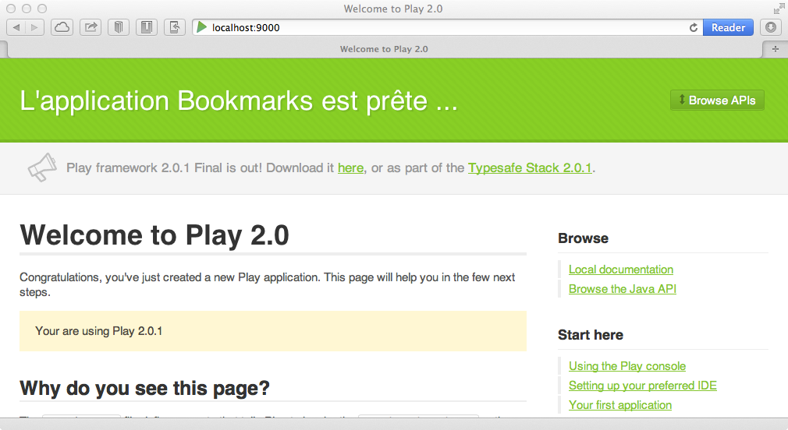
Que voulons nous faire ?
En fait, je souhaite passer en paramètres de la méthode render() de la vue index, la liste des catégories et la liste des bookmarks, pour que ma vue puisse les afficher. Modifions le code du contrôleur Application.java de la façon suivante :
package controllers;
import models.Bookmark;
import models.Category;
import play.mvc.Controller;
import play.mvc.Result;
import views.html.index;
public class Application extends Controller {
public static Result index() {
return ok(index.render(
"Vous pouvez commencer à saisir ...",
Bookmark.find.fetch("category").orderBy("title").findList(),
Category.find.orderBy("label").findList()
));
}
}//TODO : expliquer le fetchEt allons tout de suite modifier notre vue, pour enfin avoir quelque chose à montrer
@(
message: String,
bookmarks: List[models.Bookmark],
categories: List[models.Category]
)
@main("Gestion des bookmarks") {
<h1>BookMarks</h1>
<p>@message</p>
<!-- Formulaire de saisie : Catégories -->
<fieldset>
<legend>Nouvelle Catégorie</legend>
<form method="post" action="@routes.Categories.add()">
<input name="label" placeholder="label">
<button type="submit">Ajouter la Catégorie</button>
</form>
</fieldset>
<!-- Liste des Catégories -->
<ul>
@for(category <- categories) {
<li>@category.id @category.label</li>
}
</ul>
<!-- Formulaire de saisie : Bookmarks -->
<fieldset>
<legend>Nouveau Bookmark</legend>
<form method="post" action="@routes.Bookmarks.add()">
<input name="title" placeholder="title">
<input name="url" placeholder="url">
<input name="details" placeholder="details">
<select size="1" name="category.id">
@for(category <- categories) {
<option value="@category.id">@category.label</option>
}
</select>
<button type="submit">Ajouter le Bookmark</button>
</form>
</fieldset>
<!-- Liste des Bookmarks -->
<ul>
@for(bookmark <- bookmarks) {
<li>@bookmark.title : <a href="@bookmark.url">@bookmark.url</a> :
@if(bookmark.category != null) {
@bookmark.category.label
}
</li>
}
</ul>
}Lancez tout de suite, nous passerons aux explications plus tard, rafraîchissez donc votre page, vous devriez obtenir ceci :
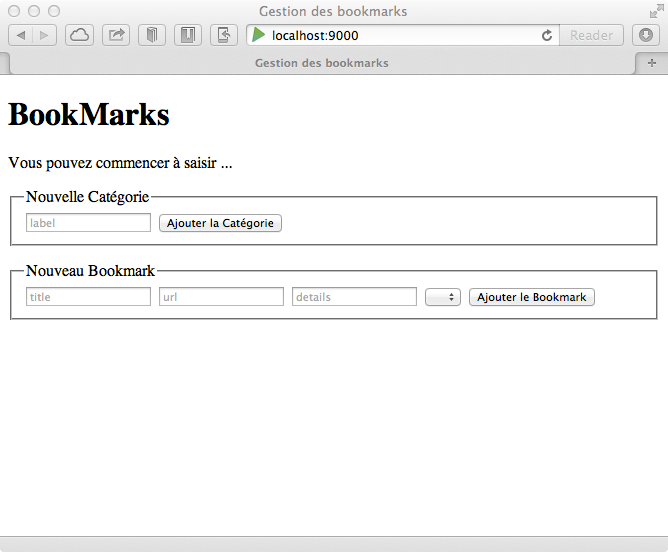
Et vous pouvez même commencer à saisir :
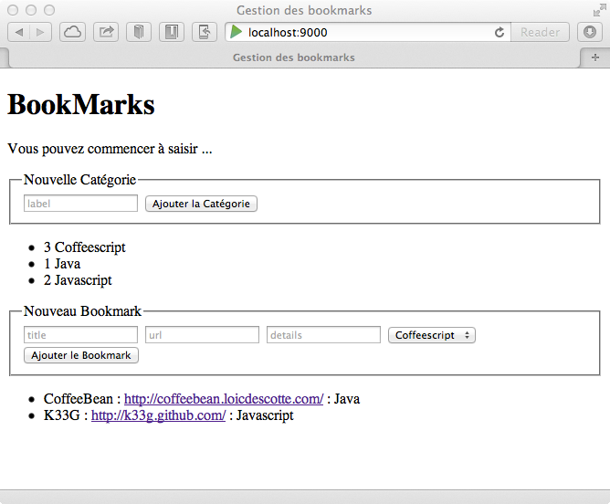
Nous avons passé en paramètres des informations à la vue :
@(
message: String,
bookmarks: List[models.Bookmark],
categories: List[models.Category]
)Nous avons affiché le message :
<p>@message</p>Nous avons créé des formulaire de saisie, en leur précisant quelle méthode appeler : @routes.Categories.add()
<form method="post" action="@routes.Categories.add()">
<input name="label" placeholder="label">
<button type="submit">Ajouter la Catégorie</button>
</form>Nous avons affiché des informations, comme la liste des catégories :
<ul>
@for(category <- categories) {
<li>@category.id @category.label</li>
}
</ul>Remarque : le langage utilisé pour les templates des vues est Scala. C'est un peu déroutant, mais vous verrez que l'on s'habitue (et que l'on peut aussi s'en passer, mais ça c'est une autre histoire).
Voilà, nous avons un embryon d'application qui fonctionne. Je vous propose maintenant d'habiller notre application pour la rendre un peu plus sexy avant de passer à des choses plus sérieuses.
Qu'allons nous voir ?
- Une petite récréation : comment rendre un site web "beau" alors que l'on est une bille en design ?
... Ce n'est pas du Play!>, mais ça va faire joli :)
Le framework css à la mode, en ce moment c'est Twitter Bootstrap. Il permet à tout développeur web le plus nul en design de donner un aspect "pro" & "joli" à ses pages web. Alors certains me diront : "on va tous avoir des sites avec la même tête !", et je répondrais : "certes, mais au moins, ils seront propres, sobres, ... et puis rien ne vous empêche ensuite d'aller un peu modifier les couleurs". Toujours est-il que c'est plus agréable de travailler avec quelque chose de joli et ça me donne l'opportunité de vous expliquer où sont les ressources statiques dans une application Play!>.
bootstrappublic de notre applicationSi vous allez dans le répertoire app/views de notre application, vous remarquerez le fichier main.scala.html. En fait on pourrait dire que le fichier (la vue) index.scala.html utilise main.scala.html. Remarquez dans index.scala.html la ligne :
@main("Gestion des bookmarks") { ... }et dans main.scala.html :
@(title: String)(content: Html)index "appelle" main en lui passant en paramètre le titre de la page et le contenu HTML. Et c'est dans main.scala.html que sont déclarées les ressources javascript et css avec la commande @routes.Assets.at.
main.scala.html
@(title: String)(content: Html)
<!DOCTYPE html>
<html>
<head>
<title>@title</title>
<meta http-equiv="Content-Type" content="text/html; charset=utf-8">
<link rel="stylesheet" media="screen"
href="@routes.Assets.at("bootstrap/css/bootstrap.css")">
<style>
body {
padding-top: 60px;
padding-bottom: 40px;
}
</style>
<link rel="stylesheet" media="screen"
href="@routes.Assets.at("bootstrap/css/bootstrap-responsive.css")">
<link rel="shortcut icon" type="image/png"
href="@routes.Assets.at("images/favicon.png")">
<script src="@routes.Assets.at("javascripts/jquery-1.7.1.min.js")"
type="text/javascript"></script>
</head>
<body>
@content
</body>
</html>//TODO : donner un peu d'explicationsVous pouvez rafraîchir votre page, c'est déjà beaucoup plus sympa :
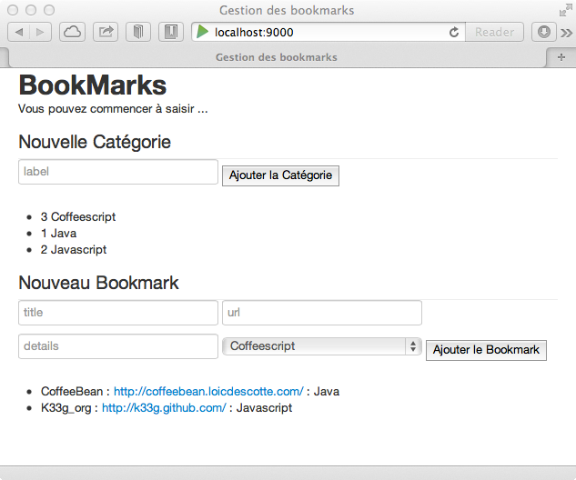
main.scala.htmlModifiez le tag <body> de la façon suivante :
<body>
<div class="navbar navbar-fixed-top">
<div class="navbar-inner">
<div class="container">
<a class="brand">@title</a>
</div>
</div>
</div>
<div class="container">
@content
</div>
</body>Vous pouvez rafraîchir votre page à nouveau, ça prend forme ... :
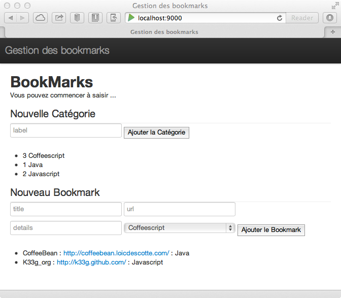
index.scala.htmlVous pouvez remplacer les tags <legend> par <h2> Ajoutez la classe btn aux tags <button class="btn">, pour avoir des boutons arrondis Remplacez le tag <p>@message</p> par <h6>@message</h6>
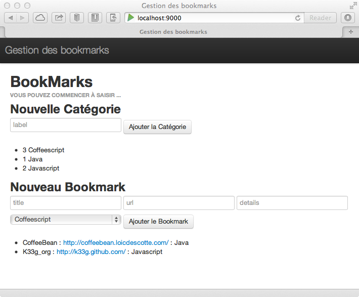
Bref, amusez vous !
Qu'allons nous voir ?
- Comment pré-charger des données au démarrage de l'application ?
... Très pratique à l'usage
A chaque fois que vous allez modifier vos modèles, vous allez perdre vos données. Donc nous allons voir comment charger un jeu de données au démarrage pour éviter d'avoir à tout re-saisir à chaque fois.
Dans le répertoire /conf, créez un fichier initial-data.yml avec les données suivantes :
# Categories
categories:
- !!models.Category
label: Javascript
- !!models.Category
label: Java
- !!models.Category
label: CoffeescriptPuis à la racine de /app, créez une classe Global.java avec le code suivant :
import play.*;
import play.libs.*;
import java.util.*;
import com.avaje.ebean.*;
import models.*;
public class Global extends GlobalSettings {
public void onStart(Application app) {
InitialData.insert(app);
}
static class InitialData {
public static void insert(Application app) {
if(Ebean.find(Category.class).findRowCount() == 0) {
Map<String,List<Object>> all =
(Map<String,List<Object>>)Yaml.load("initial-data.yml");
// Insert categories first
Ebean.save(all.get("categories"));
}
}
}
}Enfin, modifier le fichier conf/application.conf et décommenter la ligne suivante, ie :
# global=Globaldevient
global=GlobalCette manipulation permet d'activer votre nouvelle classe au démarrage de l'application.
Vous pouvez maintenant rafraîchir votre page pour vérifier que les données sont bien chargées au démarrage de votre application.
Qu'allons nous voir ?
- comment définir des contraintes sur un modèle
- comment vérifier les données d'un formulaire
- comment valider les données côté client en utilisant un module tiers
Nous voulons nous assurer que l'utilisateur entre bien un label (d'une catégorie) lors de la création d'un bookmark. Nous voulons aussi limiter la taille à 30 caractères (pourquoi pas?). Pour cela nous allons utiliser les annotations @Required et @MaxLength dans notre modèle Category sur le "champ" label (on n'oublie pas : import play.data.validation.Constraints):
package models;
import play.db.ebean.Model;
import javax.persistence.*;
import play.data.validation.Constraints;
@Entity
public class Category extends Model {
@Id
public Long id;
@Constraints.Required
@Constraints.MaxLength(30)
public String label;
// ...
}Ceci nous permettra ensuite de vérifier l'intégrité des données lors de la soumission du formulaire (= lorsque l'on ajoute une catégorie). Modifions un peu le code de notre contrôleur Categories :
public class Categories extends Controller {
public static Result add() {
final Form<Category> categoryForm = form(Category.class).bindFromRequest();
if (categoryForm.hasErrors()) { // <--- le code modifié, ça commence ici !
flash("error", "Non, non, il faut saisir autre chose !");
} else { // <--- on n'enregistre que si tout va bien
final Category category = categoryForm.get();
category.save();
}
return redirect(routes.Application.index());
}
}En cas de problème on renvoie une erreur à notre template.
Pour afficher cette erreur on peut ajouter ceci à notre fichier index.scala.html :
@if(flash.containsKey("error")) {
<div class="alert alert-error"> <!-- ceci est un style twitter bootstrap -->
<strong>Oups!</strong> @flash.get("error")
</div>
}Vous pouvez tout de suite essayer :
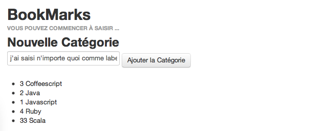
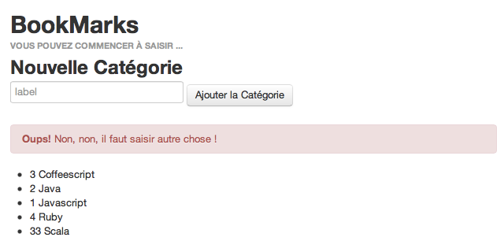
Il existe d'autres annotations de validation :
@Max et @Min pour les valeurs numériques@MinLength pour demander une taille longueur minimum à un champ@Pattern qui permet de valider des expressions régulières@Email pour valider le format emailOn peut bien sûr écrire facilement nos propres validateurs...
Avec HTML5, il est possible de valider des données d'un formulaire directement depuis le navigateur avant de les envoyer au serveur.
Il existe un module Play (développé par un de vos serviteurs : @loic_d) que vous trouverez ici : https://github.com/loicdescotte/Play2-HTML5Tags, pour générer les bonnes balises HTML à partir des contraintes du modèle.
Avant de l'utiliser, voyons comment l'installer.
Pour le moment il n'existe pas de repository public pour les modules Play2!>, donc téléchargez sur le site le plugin (utilisez le bouton "zip" ou directement le lien https://github.com/loicdescotte/Play2-HTML5Tags/zipball/master). Une fois le module téléchargé, dé-zippez, allez dans le répertoire du module :
Les versions de Play, Sbt, ... ont une importance "VITALE" ;), il faut donc aller modifier quelques petits paramètres en fonction de la version de Play que vous utilisez, mais seulement si c'est nécessaire, ce n'est utile que dans les cas où la version du module a été développé pour une version antérieur de Play (par exemple version 2.0.1 contre version 2.0.2). Si c'est le cas vous aurez les 2 manipulations ci-dessous à effectuer :
/projet changez dans build.properties sbt.version=0.11.2 par sbt.version=0.11.3/projet changez dans plugins.sbt addSbtPlugin("play" % "sbt-plugin" % "2.0") par addSbtPlugin("play" % "sbt-plugin" % "2.0.2")PS: bien sûr cela change en fonction des versions de Play.
Ensuite dans le répertoire du module, en mode console, tapez : play, cela va "mouliner" un petit moment, vous devriez ensuite obtenir un prompt avec le nom du module :
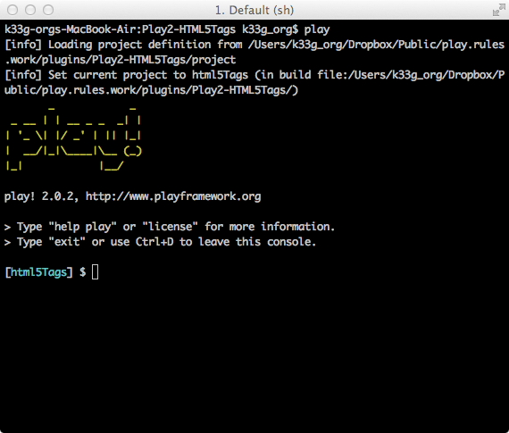
Ensuite, au prompt, tapez publish-local, là encore cela mouline un moment, Play compile et installe le plugin pour qu'il soit utilisable par toutes vos applications Play. Vous pouvez allez vérifier dans le répertoire d'installation de Play, dans /repository/local vous avez maintenant un répertoire com.loicdescotte.coffeebean qui contient le module html5tags_2.9.1.
Avant de pouvoir utiliser le module, vous devez déclarer son utilisation dans votre application. Il va donc falloir modifier le fichier /project/Build.scala de votre application Play :
import sbt._
import Keys._
import PlayProject._
object ApplicationBuild extends Build {
val appName = "bookmarks"
val appVersion = "1.0-SNAPSHOT"
val appDependencies = Seq(
// Add your project dependencies here,
"com.loicdescotte.coffeebean" % "html5tags_2.9.1" % "1.0-SNAPSHOT"
)
val main = PlayProject(appName,
appVersion, appDependencies, mainLang = JAVA).settings(
// Add your own project settings here
resolvers += "Local Play Repository" at "/Users/k33g_org/play-2.0.2/repository"
)
}Maintenant vous pouvez utiliser le module.
Dans le cas de notre application de gestion de bookmarks, on va pouvoir remplacer ceci :
<input name="label" placeholder="label">Par cela :
@text(categoryForm("label"), 'placeholder -> "LABEL : ")Et le "markup" approprié sera généré :
<input name="url" placeholder="url" maxlength="30" required>Le navigateur vérifiera alors la présence et la longueur du champ avant d'envoyer les données au serveur, ce qui permettra à l'utilisateur d'avoir un retour d'erreur plus rapide en case de problème et d'économiser un peu de bande passante!
Mais pour que cela fonctionne, quelques manipulations sont encore nécessaires :
Dans le contrôleur Application.java, ajoutons form(Category.class) en argument de la méthode index.render() :
public class Application extends Controller {
public static Result index() {
return ok(index.render(
"Vous pouvez commencer à saisir ...",
Bookmark.find.fetch("category").orderBy("title").findList(),
Category.find.orderBy("label").findList(),
User.find.byId(request().username()),
form(Category.class) //<--- c'est ici
));
}
}Puis, dans la vue index.scala.html, déclarons ce nouveau paramètre :
@(
message: String,
bookmarks: List[models.Bookmark],
categories: List[models.Category],
user: User,
categoryForm: Form[models.Category]
)Ajoutons tout de suite après ceci (spécifique au module que nous avons installé):
@import html5.tags.html._Maintenant nous pouvons remplacer <input name="label" placeholder="label"> par @text(categoryForm("label"), 'placeholder -> "saisir un label") et vous obtiendrez ceci :
Si vous ne souhaitez pas voir apparaître les contraintes de saisie, utilisez plutôt : @text(categoryForm("label"), 'placeholder -> "saisir un label", '_showConstraints -> false).
Remarque : Le fait de référencer un objet categoryForm nous permettra si on le souhaite plus tard d'éditer une catégorie existante en remplissant directement le champ du formulaire avec la valeur de notre objet. On pourrait par exemple écrire quelque chose comme ça dans le contrôleur :
public static Result edit(Long id) {
Form<Category> categoryForm = form(Category.class).fill(
Category.find.byId(id)
);
return ok(
edit.render(id, categoryForm)
);
}Le tag text tag est capable de changer le type de <input> si une annotation particulière est détectée.
Par exemple avec le modèle suivant :
@Constraints.Email
public String contactMail;Et ce tag :
@text(form("contactMail"))On obtiendra ceci :
<input type="email" id="contactMail" name="contactMail" value="">Et le navigateur vérifiera le format saisi :
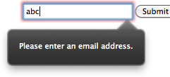
HTML5 reconnait de nouveaux type de données dans les formulaires, comme les nombres, les dates, les numéros de téléphone, les URL.... Le module prend en charge ces types de données à travers des tags particuliers (@number, @date, @telephone, @url ...)
Le fait de préciser le type de <input> permet également au navigateur, particulièrement sur mobile, d'adapter son IHM au format demandé. Par exemple pour un champ numérique :
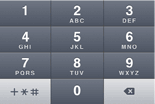
Qu'allons nous voir ?
- Comment mettre en oeuvre un système simple d'authentification
Remarque : la rédaction "complète" de ce chapitre reste encore à faire, mais les codes sont complets et vous pouvez les utiliser tels quels.
Pour que n'importe qui ne puisse pas saisir des bookmarks, nous allons mettre en place un système d'authentification.
//TODO : expliquer ce que fait le code
package models;
import java.util.*;
import javax.persistence.*;
import play.db.ebean.Model;
import play.data.format.*;
import play.data.validation.*;
@Entity
public class User extends Model {
@Id
@Constraints.Required
@Formats.NonEmpty
public String email;
@Constraints.Required
public String name;
@Constraints.Required
public String password;
public static Model.Finder<String,User> find =
new Model.Finder(String.class, User.class);
public static List<User> findAll() {
return find.all();
}
public static User findByEmail(String email) {
return find.where().eq("email", email).findUnique();
}
public static User authenticate(String email, String password) {
return find.where()
.eq("email", email)
.eq("password", password)
.findUnique();
}
public String toString() {
return "User(" + email + ")";
}
}
//TODO : expliquer ce que fait le code
package controllers;
import play.*;
import play.mvc.*;
import play.mvc.Http.*;
import models.*;
public class Secured extends Security.Authenticator {
@Override
public String getUsername(Context ctx) {
return ctx.session().get("email");
}
@Override
public Result onUnauthorized(Context ctx) {
return redirect(routes.Authentication.login());
}
}@Security.Authenticated(Secured.class)index.render()Code final :
package controllers;
import play.*;
import play.mvc.*;
import play.data.*;
import models.*;
import views.html.*;
@Security.Authenticated(Secured.class)
public class Application extends Controller {
public static Result index() {
return ok(index.render(
"Vous pouvez commencer à saisir ...",
Bookmark.find.fetch("category").orderBy("title").findList(),
Category.find.orderBy("label").findList(),
User.find.byId(request().username())
));
}
}
package controllers;
import play.*;
import play.mvc.*;
import play.data.*;
import models.*;
import views.html.*;
public class Authentication extends Controller {
public static class AuthenticatedUser {
public String email;
public String password;
public String validate() {
if(User.authenticate(email, password) == null) {
return "oups! râté! Essaye encore une fois";
}
return null;
}
}
public static Result login() {
return ok(
login.render(form(AuthenticatedUser.class))
);
}
//On récupère les informations de login (quand le user se "signe")
public static Result authenticate() {
Form<AuthenticatedUser> loginForm =
form(AuthenticatedUser.class).bindFromRequest();
if(loginForm.hasErrors()) {
return badRequest(login.render(loginForm));
} else {
session("email", loginForm.get().email);
return redirect(
routes.Application.index()
);
}
}
//Fermer la session
public static Result logout() {
session().clear();
flash("success", "Vous êtes déconnecté(e)");
return redirect(
routes.Authentication.login()
);
}
}# Authentication
GET /login controllers.Authentication.login()
POST /login controllers.Authentication.authenticate()
GET /logout controllers.Authentication.logout()Nous avons vu que nous passions le user authentifié à la méthode index.render() de la vue dans le contrôleur Application :
public static Result index() {
return ok(index.render(
"Vous pouvez commencer à saisir ...",
Bookmark.find.fetch("category").orderBy("title").findList(),
Category.find.orderBy("label").findList(),
User.find.byId(request().username())
));
}Modifions donc le code des formulaires en conséquence :
user en paramètre : @(title: String, user: User)(content: Html)user est authentifié nous affichons ses informations et la possibilité de se "déloguer" :
@if(user != null) {
<ul class="nav">
<li><a>@user.name <span>(@user.email)</span></a></li>
<li><a href="@routes.Authentication.logout()">Logout</a></li>
</ul>
}Le code définitif va donner ceci :
@(title: String, user: User)(content: Html)
<!DOCTYPE html>
<html>
<head>
<title>@title</title>
<meta http-equiv="Content-Type" content="text/html; charset=utf-8">
<link rel="stylesheet" media="screen"
href="@routes.Assets.at("bootstrap/css/bootstrap.css")">
<style>
body {
padding-top: 60px;
padding-bottom: 40px;
}
</style>
<link rel="stylesheet" media="screen"
href="@routes.Assets.at("bootstrap/css/bootstrap-responsive.css")">
<link rel="shortcut icon" type="image/png"
href="@routes.Assets.at("images/favicon.png")">
<script src="@routes.Assets.at("javascripts/jquery-1.7.1.min.js")"
type="text/javascript"></script>
</head>
<body>
<div class="navbar navbar-fixed-top">
<div class="navbar-inner">
<div class="container">
<a class="brand">@title</a>
@if(user != null) {
<ul class="nav">
<li><a>@user.name <span>(@user.email)</span></a></li>
<li><a href="@routes.Authentication.logout()">Logout</a></li>
</ul>
}
</div>
</div>
</div>
<div class="container">
@content
</div>
</body>
</html>En effet, index utilisant main, nous devons ajouter la notion de user, il y a juste le début à modifier :
Vous vous souvenez, dans Application nous avons modifié l'appel de index.render() :
@(
message: String,
bookmarks: List[models.Bookmark],
categories: List[models.Category],
user: User
)et la modification précédente de main.scala.html implique le passage du paramètre user à @main() :
@main("Gestion des bookmarks", user) { ...Nous y sommes presque. Il faut créer le formulaire de login : créez dans le répertoire views un fichier login.scala.html avec le code suivant :
@(form: Form[Authentication.AuthenticatedUser])
@main("Authentification", null) {
@helper.form(routes.Authentication.authenticate) {
<h2>Qui êtes vous ?</h2>
@if(form.hasGlobalErrors) {
<p class="error">@form.globalError.message</p>
}
@if(flash.contains("success")) {
<p class="success">@flash.get("success")</p>
}
<p><input type="email" name="email" placeholder="Email"
value="@form("email").value"></p>
<p><input type="password" name="password" placeholder="Password"></p>
<p><button class="btn" type="submit">Login</button></p>
}
}Cela permettra de se connecter, donc dans le fichier initial-data.yml, ajouter ceci (ou quelque chose d'approchant) :
# Users
users:
- !!models.User
email: ph.charriere@gmail.com
name: k33g
password: play
- !!models.User
email: bob@morane.com
name: bob
password: indochineAinsi, nous aurons 2 utilisateurs au chargement de l'application. Et pour les charger, nous allons modifier le fichier Global.java
import play.*;
import play.libs.*;
import java.util.*;
import com.avaje.ebean.*;
import models.*;
public class Global extends GlobalSettings {
public void onStart(Application app) {
InitialData.insert(app);
}
static class InitialData {
public static void insert(Application app) {
Map<String,List<Object>> all =
(Map<String,List<Object>>)Yaml.load("initial-data.yml");
if(Ebean.find(User.class).findRowCount() == 0) {
Ebean.save(all.get("users"));
}
if(Ebean.find(Category.class).findRowCount() == 0) {
// Insert categories first
Ebean.save(all.get("categories"));
}
}
}
}C'est bon vous pouvez lancer l'application à nouveau.
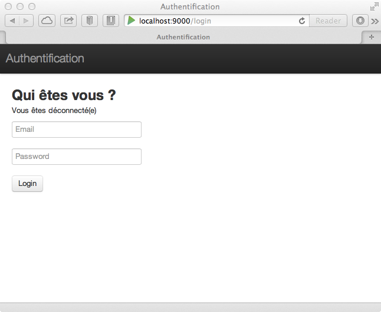
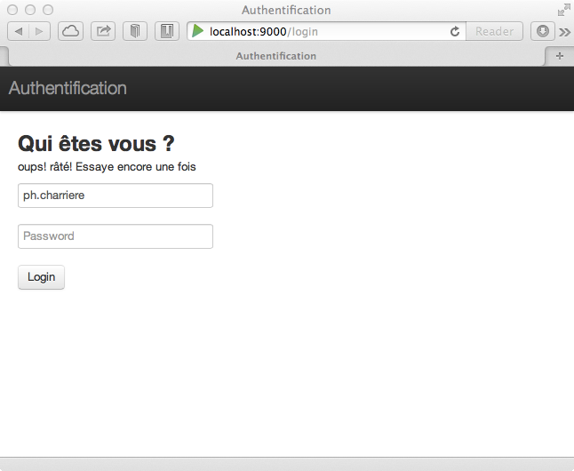
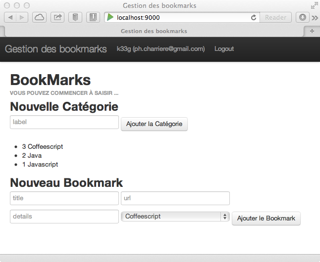
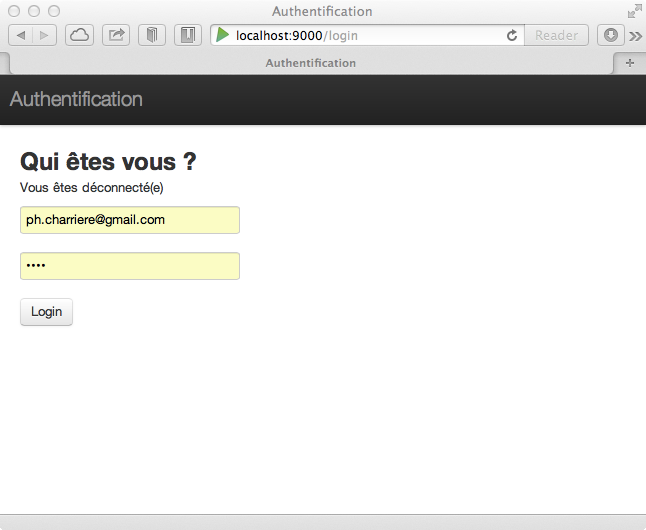
Qu'allons nous voir ?
- comment faire un service json
- comment sécuriser ce service
- comment s'authentifier via ajax
- comment faire une "single page application"
Ajoutons quelques bookmarks dans notre applications :
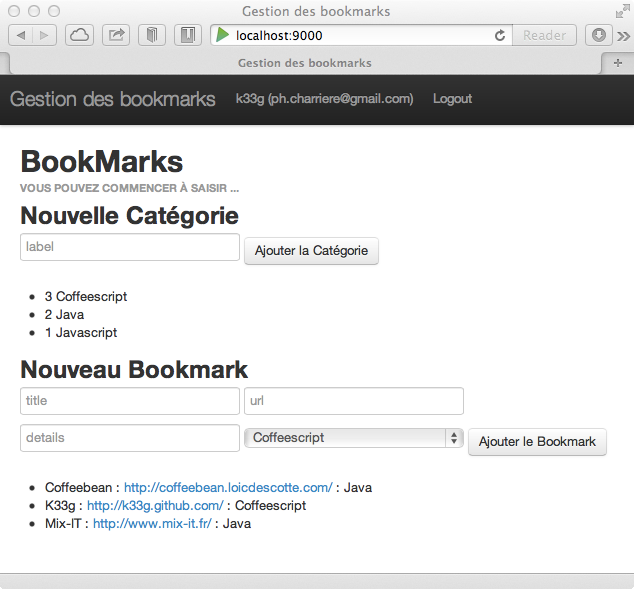
Objectif : faire un service qui nous renvoie la liste des bookmarks au format JSON
bookmarks.java dans app/controllers
import java.util.HashMap;
import java.util.List;
import java.util.Map;
import static play.libs.Json.toJson;
public static Result jsonList() {
Map<String, List<Bookmark>> data = new HashMap<String, List<Bookmark>>();
List<Bookmark> list = Bookmark.find.orderBy("title").findList();
data.put("bookmarks", list);
return ok(toJson(data));
}Nous ajoutons la route suivante :
#Services
GET /bookmarks/jsonlist controllers.Bookmarks.jsonList()
package controllers;
import models.Bookmark;
import play.*;
import play.mvc.*;
import play.data.*;
import java.util.HashMap;
import java.util.List;
import java.util.Map;
import static play.libs.Json.toJson;
public class Bookmarks extends Controller {
public static Result add() {
final Form<Bookmark> bookmarkForm = form(Bookmark.class).bindFromRequest();
final Bookmark bookmark = bookmarkForm.get();
bookmark.save();
return redirect(routes.Application.index());
}
public static Result jsonList() {
Map<String, List<Bookmark>> data = new HashMap<String, List<Bookmark>>();
List<Bookmark> list = Bookmark.find.orderBy("title").findList();
data.put("bookmarks", list);
return ok(toJson(data));
}
}Donc, lorsque nous appellerons l'url localhost:9000/bookmarks/jsonlist, nous obtiendrons la liste des bookmarks au format JSON.
Dans la zone de saisie de l'url de votre navigateur, saisissez donc localhost:9000/bookmarks/jsonlist. Et vous obtenez le flux JSON de vos bookmarks :
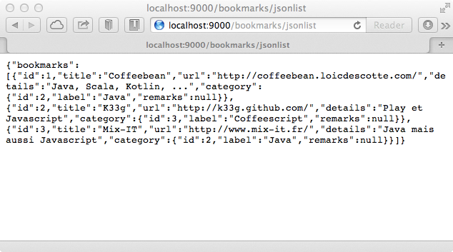
Comme vous le savez (ou pas), Play2!> est fourni avec jQuery, "petit" framework javascript très utile pour "jouer" avec le DOM de vos pages, mais aussi pour faire des requêtes ajax. Si vous vous souvenez, dans la vue (portion de vue) main.scala.html il y avait le code suivant :
<script src="@routes.Assets.at("javascripts/jquery-1.7.1.min.js")"
type="text/javascript"></script>Ce qui signifie que toute vue "utilisant" main.scala.html, comme par exemple index.scala.html (vous trouverez la déclaration @main(...) dans le code), charge jQuery. Donc,
http://localhost:9000)
$.ajax({type:"GET", url:"/bookmarks/jsonlist",
error : function(err){ console.log(err); },
success : function(dataFromServer) {
console.log(dataFromServer);
}
});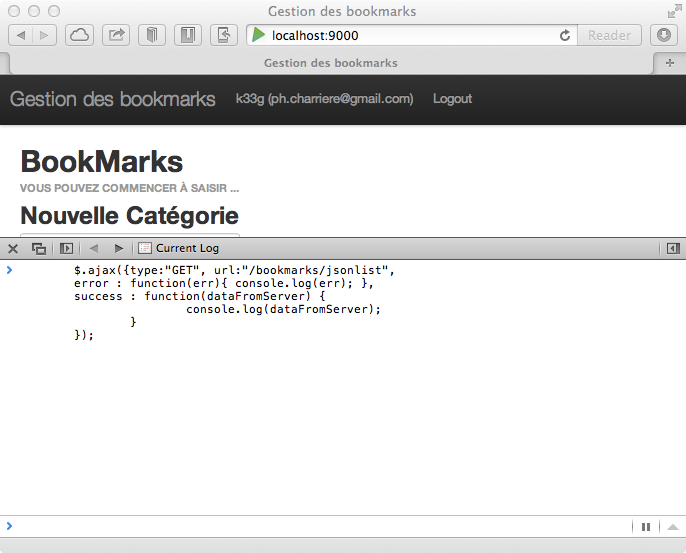
Vous obtenez directement un objet bookmarks qui est un tableau d'objets avec les éléments attendus :
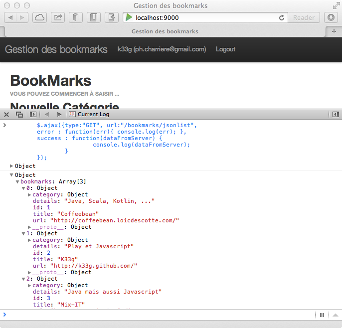
Et vous remarquerez ...
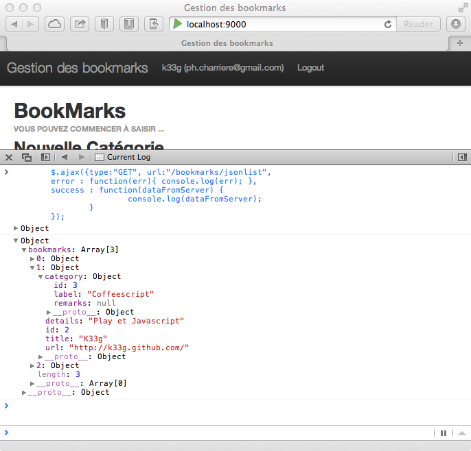
... que les objets bookmark du tableau bookmarks contiennent les objets "liés" category.
Génialement simplissime et pratique, non !?
Attention : dans mon exemple le service n'est pas sécurisé
Sécurisons notre contrôleur Bookmarks.java en lui ajoutant l'annotation @Security.Authenticated(Secured.class). Ensuite (après recompilation), retournez à la racine du site localhost:9000 pour vous "deloguer". Puis relancez votre requête ajax, et là vous obtenez (curieusement ?) le code HTML de la page d'authentification en retour. Ce qui est rassurant, c'est que notre service est bien sécurisé, mais le code de retour n'est pas forcément "top" à gérer.
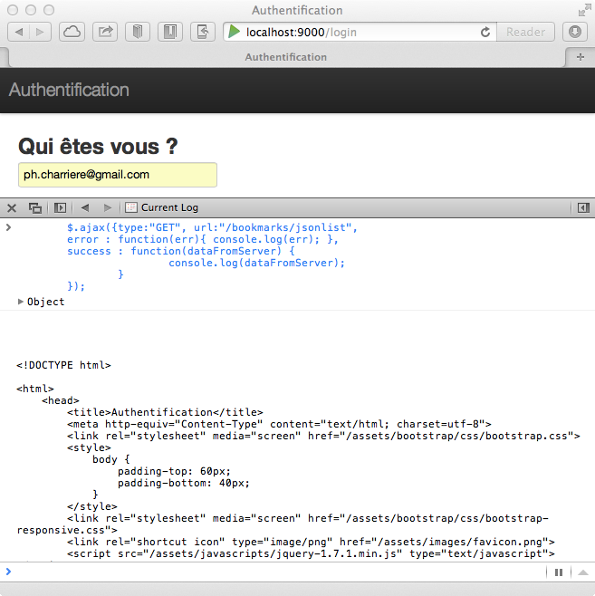
En fait, dans notre classe Secured.java nous avions la méthode suivante :
@Override
public Result onUnauthorized(Context ctx) {
return redirect(routes.Authentication.login());
}Donc, si vous n'êtes pas authentifié, vous êtes redirigé vers la page d'authentification, d'où la récupération du code HTML dans notre requête ajax.
Nous allons donc créer une classe du même type que Secured.java mais dédiée aux appels JSON.
package controllers;
import play.*;
import play.mvc.*;
import play.mvc.Http.*;
import models.*;
import static play.libs.Json.toJson;
public class SecuredJson extends Security.Authenticator {
@Override
public String getUsername(Context ctx) {
return ctx.session().get("email");
}
@Override
public Result onUnauthorized(Context ctx) {
return ok(toJson("failed"));
}
}Remplacez @Security.Authenticated(Secured.class) par :
`@Security.Authenticated(SecuredJson.class)`Lancez à nouveau, dans la console du navigateur, votre requête ajax :
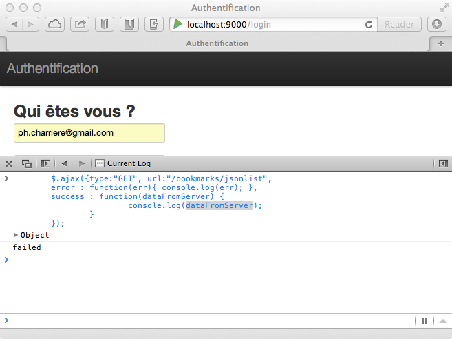
Là aussi, nous allons devoir créer une classe du même type qu'Authentication.java mais qui ne redirige pas vers la page principale pour ne pas avoir du code HTML comme retour.
Remarque : Je pourrais hériter de Authentication.java, mais pour le moment je vais dupliquer le code et le modifier.
package controllers;
import play.*;
import play.mvc.*;
import play.data.*;
import models.*;
import views.html.*;
import static play.libs.Json.toJson;
public class AuthenticationJson extends Controller {
public static class AuthenticatedUser {
public String email;
public String password;
public String validate() {
if(User.authenticate(email, password) == null) {
return "oups";
}
return null;
}
}
//On récupère les informations de login (quand le user se "signe")
public static Result authenticate() {
Form<AuthenticatedUser> loginForm =
form(AuthenticatedUser.class).bindFromRequest();
if(loginForm.hasErrors()) {
return ok(toJson("badRequest"));
} else {
session("email", loginForm.get().email);
User who = User.findByEmail(loginForm.get().email);
return ok(toJson(who.name));
}
}
//Fermer la session
public static Result logout() {
session().clear();
return ok(toJson("bye"));
}
}POST /loginjson controllers.AuthenticationJson.authenticate()
GET /logoutjson controllers.AuthenticationJson.logout()Dans la console du navigateur, essayez la commande suivante (vous ne devez pas être authentifié) :
$.ajax({
type:"POST",
url:"/loginjson", data:{email:"ph.charriere@gmail.com",password:"play"},
error : function(err){console.log("Erreur", err);},
success : function(data){ console.log(data);}
});Vous allez obtenir ceci :
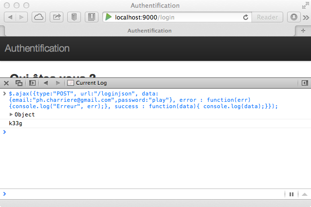
Et si vous rappelez l'url http://localhost:9000, vous apparaissez comme authentifié. Vous pouvez tester à nouveau votre requête pour récupérer la liste des bookmarks :
$.ajax({type:"GET", url:"/bookmarks/jsonlist",
error : function(err){ console.log(err); },
success : function(dataFromServer) {
console.log(dataFromServer);
}
});Si vous souhaitez vous délogguer (toujours via une requête Ajax) :
$.ajax({
type:"GET",
url:"/logoutjson",
error : function(err){console.log("Erreur", err);},
success : function(data){ console.log(data);}
});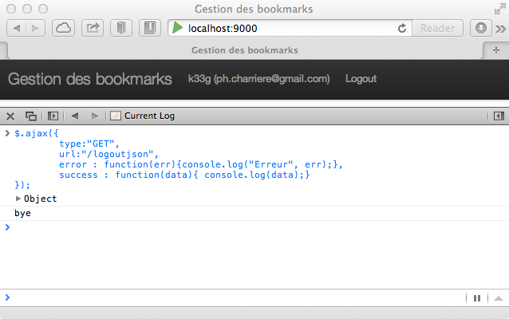
Et si vous rappelez l'url http://localhost:9000, vous n'êtes plus authentifié.
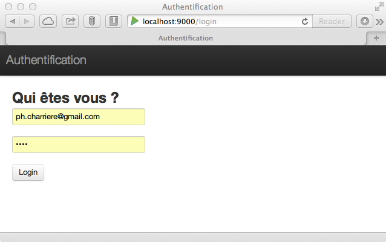
Si vous testez à nouveau votre requête pour récupérer la liste des bookmarks, vous aurez un message vous indiquant que ce n'est pas possible (failed) car non autorisé (cf. SecuredJson.java):
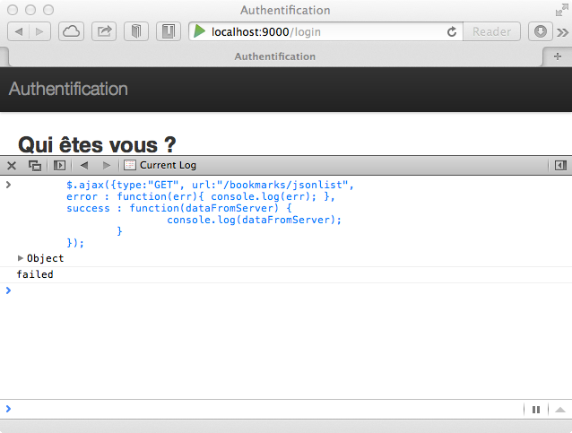
De la même manière, si vous tentez de vous authentifier avec un mauvais compte utilisateur :
$.ajax({
type:"POST",
url:"/loginjson", data:{email:"sam@gmail.com",password:"play"},
error : function(err){console.log("Erreur", err);},
success : function(data){ console.log(data);}
});Vous obtiendrez un message badRequest (cf. AuthenticationJson.java) :
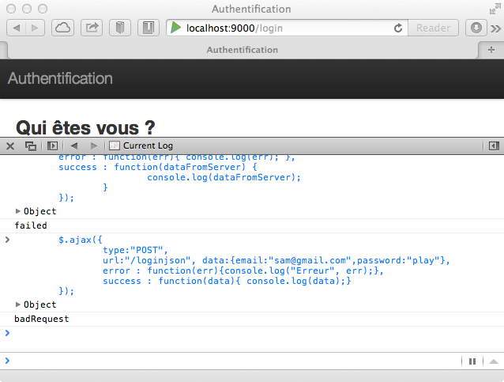
Mettons en applications ce que nous venons de voir pour faire quelque chose d'un peu plus "pratique" : développons une "Single page application" :
Commençons par créer un nouveau contrôleur :
Alors, c'est très simple, dans le répertoire controllers, créez un nouveau contrôleur avec le nom SingleApp.java :
package controllers;
import play.*;
import play.mvc.*;
import play.data.*;
import models.*;
import views.html.*;
public class SingleApp extends Controller {
public static Result mainPage() {
return ok(mainPage.render(
"Single Page Application"
));
}
}Ajoutons une route dans le fichier routes :
# Main Single Page Application
GET /main controllers.SingleApp.mainPage()Finalement le gros du travail va se faire en html et javascript. Nous disposons de jQuery (c'est fourni en standard avec Play!>), et si vous vous souvenez, nous avons installé Twitter Bootstrap. Nous allons donc voir comment faire une "single page application", donc plus notions de templating : je vais utiliser une vue "scala" mais qui ne contiendra que le minimum de code scala (dans l'absolu nous pourrions utiliser une simple page html).
Commencez par créer une nouvelle vue (dans le répertoire views) que vous nommerez mainPage.scala.html. Je suis reparti (copier/coller ... je sais) de main.scala.html. Je ne fais que reprendre les requêtes "ajax" que nous avons utilisées précédement pour tester nos services json.
Attention : mon code javascript n'est pas forcément compatible avec tous les navigateurs, je suis allé au plus simple et j'ai utilisé les possibilités de la dernière version de javascript (par exemple : le forEach sur un array).
@(title: String)
<!DOCTYPE html>
<html>
<head>
<title>@title</title>
<meta http-equiv="Content-Type" content="text/html; charset=utf-8">
<link rel="stylesheet" media="screen"
href="@routes.Assets.at("bootstrap/css/bootstrap.css")">
<style>
body {
padding-top: 60px;
padding-bottom: 40px;
}
</style>
<link rel="stylesheet" media="screen"
href="@routes.Assets.at("bootstrap/css/bootstrap-responsive.css")">
<link rel="shortcut icon" type="image/png"
href="@routes.Assets.at("images/favicon.png")">
<script src="@routes.Assets.at("javascripts/jquery-1.7.1.min.js")"
type="text/javascript"></script>
</head>
<body>
<div class="navbar navbar-fixed-top">
<div class="navbar-inner">
<div class="container">
<a class="brand">@title</a>
</div>
</div>
</div>
<div class="container">
<!-- === Formulaire d'authentification === -->
<fieldset>
<legend>Authentification :</legend>
<div class="well">
<label>Email :
<input type="email" name="email" placeholder="Email"></label>
<label>Password :
<input type="password" name="password"
placeholder="Password"></label>
<button name="login" class="btn btn-primary">Login</button>
<button name="logout" class="btn">Logout</button>
</div>
</fieldset>
<!-- === Les messages s'afficheront ici === -->
<div name="authentication" class="alert alert-info">
<strong>Info : </strong> Veuillez vous authentifier s'il vous plaît
</div>
<!-- === Les bookmarks s'afficheront ici === -->
<fieldset>
<legend>Liste des Bookmarks <button name="loadbookmarks"
class="btn btn-inverse">Charger ...</button></legend>
<ul name="bookmarks"></ul>
</fieldset>
</div>
</body>
<!-- === ici votre code applicatif === -->
<script>
/*=== mon code ne s'exécute qu'une fois le DOM complètement chargé ===*/
$(function (){
//définition des différents éléments d'IHM
var user = {}
, alertAuthentication = $('div[name=authentication]')
, loginButton = $("button[name=login]")
, logoutButton = $("button[name=logout]")
, loadBookmarksButton = $("button[name=loadbookmarks]")
, email = $('input[name=email]')
, password = $('input[name=password]')
, labels = $('label')
, bookmarksList = $('ul[name=bookmarks]');
// onclick du bouton login
loginButton.click(function(){
user.email = email.val();
user.password = password.val();
$.ajax({
type:"POST",
url:"/loginjson", data:{
email : user.email,
password : user.password
},
error : function(err){console.log("Erreur", err);},
success : function(data){
if(data !== "badRequest") {
alertAuthentication
.attr('class','alert alert-success')
.html('<strong>Bienvenue !</strong> ' + data);
user.name = data;
labels.hide();
email.hide();
password.hide();
loginButton.hide();
} else {
alertAuthentication
.attr('class','alert alert-error')
.html('<strong>Oups !</strong> vous avez du vous tromper');
}
}
});
});
// onclick du bouton logout
logoutButton.click(function(){
$.ajax({
type:"GET",
url:"/logoutjson",
error : function(err){console.log("Erreur", err);},
success : function(data){
if(user.name) {
alertAuthentication
.attr('class','alert alert-info')
.html('<strong>Au revoir</strong> ' + user.name);
labels.show();
email.show();
password.show();
loginButton.show();
user = {};
bookmarksList.html('');
}
}
});
});
// onclick du bouton de chargement des bookmarks
loadBookmarksButton.click(function(){
$.ajax({type:"GET", url:"/bookmarks/jsonlist",
error : function(err){ console.log(err); },
success : function(data) {
if(data !== "failed") {
bookmarksList.html('');
data.bookmarks.forEach(function(bookmark){
bookmarksList.append(
$('<li>')
.append($('<b>').append(bookmark.title))
.append(' | ')
.append($('<a>').attr("href",bookmark.url)
.append(bookmark.url))
.append(' | ')
.append($('<i>')
.append(bookmark.details))
.append(' | (')
.append(bookmark.category.label).append(')')
);
});
} else {
alertAuthentication
.attr('class','alert alert-error')
.html('<strong>Il faut être authentifié !</strong> \n
pour obtenir la liste des bookmarks');
}
}
});
});
});
</script>
</html>Dans votre navigateur, appelez l'url : http://localhost:9000/main
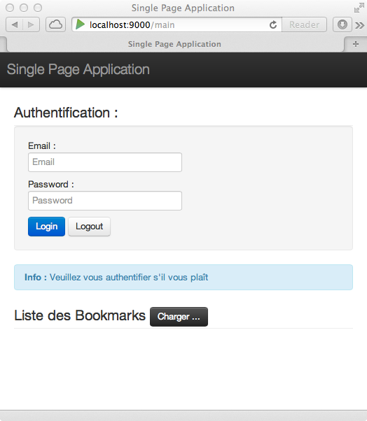
Si vous vous trompez en vous authentifiant :
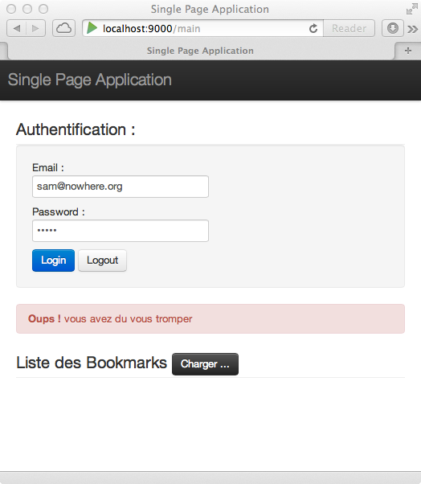
Si vous essayez de charger les bookmarks alors que vous n'êtes pas authentifié :
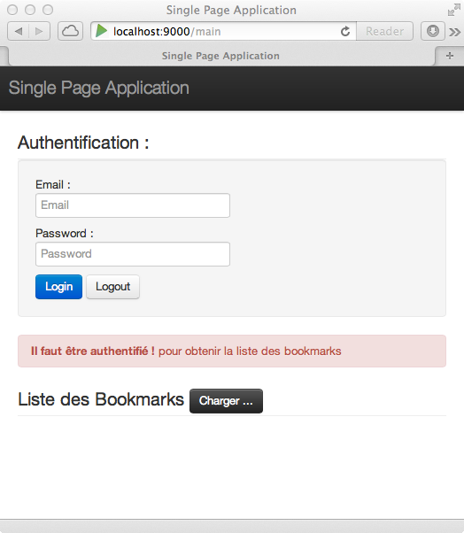
Si vous vous êtes correctement authentifié :
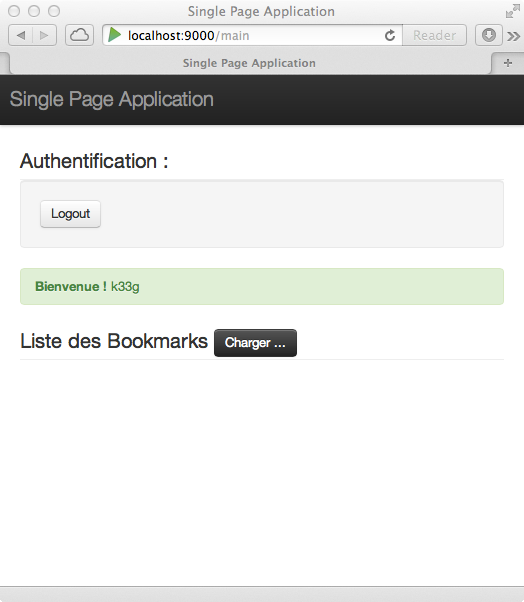
Vous pouvez donc charger les bookmarks :
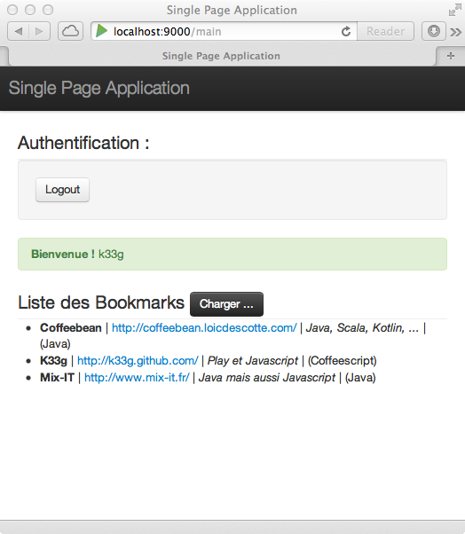
Si vous retournez à la racine du site : http://localhost:9000/, vous pouvez vérifiez que vous avez effectivemnt été authentifié :
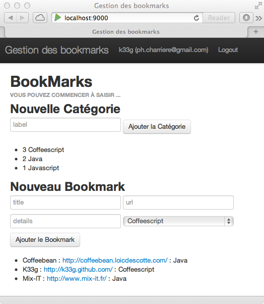
Il est donc finallement très possible de "faire" du Play!> 2 (java) sans utiliser (ou presque) du scala dans les vues. Pensez-y lorsque vous faites du Play!> 1 (le mécanisme décrit est tout à fait reproductible dans la version 1), cela peut faciliter vos migrations.
Qu'allons nous voir ?
- Qu'est-ce que c'est et pourquoi ?
- Découverte rapide de Coffeescript
- Utilisation de Coffeescript
- LESS ?
- ...
Mais qu'est-ce donc ? En fait, ce sont tous les fichiers statiques (css, html, js, coffee, png, jpg ...) de votre application web Play. Vous les trouvez dans le répertoire public de l'application. Et pour y faire référence dans nos vues scala, nous utilisons le mot clé @routes.Assets.at() :
<script src="@routes.Assets.at("javascripts/jquery-1.7.1.min.js")" type="text/javascript"></script><link rel="stylesheet" media="screen" href="@routes.Assets.at("bootstrap/css/bootstrap-responsive.css")"><link rel="shortcut icon" type="image/png" href="@routes.Assets.at("images/favicon.png")">Mais il existe d'autres types d'assets.
Ce sont les fichiers statiques qui subissent un retraitement avant publication, comme :
less en css (nous allons voir ce que c'est plus loin)Remarque : Play gère la mise en cache des assets.
Pour que Play compile les assets, il faut créer un répertoire assets dans le répertoire app, puis dans le répertoire assets, créez un répertoire javascripts et un répertoire stylesheets.
Nous allons commencer par des assets Coffeescript.
Mais, tout d'abors une petite présentation de Coffeescript avant la mise en oeuvre.
Coffeescript c'est à la fois un langage et un transpiler (un run-time aussi). Vous écrivez en Coffeescript, puis vous transpilez en Javascript. Ce nouveau langage a été créé par Jeremy Ashkenas (https://github.com/jashkenas/coffee-script & http://coffeescript.org/).
Remarque : Coffeescript est "fourni" avec Play!>2.
Vous pouvez exécuter Coffeescript :
coffee"CoffeeScript is JavaScript, the same language with a different accent" Patrick Lee (CoffeeScript in Action)
Coffescript simplifie le javascript, génère du javascript "propre" et apporte de nombreux "plus" pour vous faciliter la vie, simplifier votre code, en améliorer la lisibilité.
Quelques exemples avant de passer à la pratique.
addition = (a,b) ->
a+b#Ceci est une remarque :
#code js avant :
# jQuery $(document).ready(function () {
# some();
# init();
# calls();
# });
$ -> some()
init()
calls()Remarque : la syntaxe coffeescript facilite la création de DSL
Par exemple vous avez un objet :
bob =
firstName : "Bob"
lastName : "Morane"
hello : ->
"Hello !"sont équivalent javascript serait :
var bob = {
firstName : "Bob",
lastName : "Morane",
hello : function () {
return "Hello !";
}
}Vous pouvez ensuite l'utiliser dans une String (et notez bien, sur plusieurs lignes) de la façon suivante :
console.log "
Firstname : #{bob.firstName},
LastName : #{bob.lastName},
Method (hello) : #{bob.hello()}
"buddies = [
{name:"Bob", age:30}
{name:"Sam", age:50}
{ name : "John", age : 20 }
]
#tous les copains de moins de 50 ans
result = (buddy for buddy in buddies when buddy.age < 50)class Human
#static field
@counter : 0
constructor : (@firstName, @lastName) ->
#fields : @ = this
Human.counter += 1
#method
hello : ->
console.log "Hello #{@firstName} #{@lastName}"
#static method
@howMany : ->
Human.counter
Bob = new Human "Bob", "Morane"
console.log "Human.counter #{Human.howMany()}"class Superhero extends Human
constructor : (@firstName, @lastName, @name) ->
hello : ->
super + " aka #{@name}"Nous allons re-écrire le code de notre "single page application" (cf chapitre "Services (JSON)") en Coffeescript.
Tout d'abord, vous pouvez supprimer le code javascript dans la vie mainPage.scala.html (juste après la remarque <!-- === ici votre code applicatif === -->).
Ensuite, toujours dans la même vue, dans la section <head>, juste après la référence à jQuery, ajoutez une référence à notre futur code :
<script src="@routes.Assets.at("javascripts/myapp.js")" type="text/javascript"></script>Nous allons ensuite créer un fichier myapp.coffee qui sera automatiquement compilé (transpilé) par Play en javascript.
Dans le répertoire app/assets/javascripts, créez un fichier myapp.coffee avec le code suivant :
#=== mon code ne s'exécute qu'une fois le DOM complètement chargé ===
console.log "CoffeeScript version in progress ..."
$ ->
#définition des différents éléments d'IHM
console.log "dom loaded ... i hope ..."
user = {}
alertAuthentication = $ "div[name=authentication]"
loginButton = $ "button[name=login]"
logoutButton = $ "button[name=logout]"
loadBookmarksButton = $ "button[name=loadbookmarks]"
email = $ "input[name=email]"
password = $ "input[name=password]"
labels = $ "label"
bookmarksList = $ "ul[name=bookmarks]"
#onclick du bouton login
console.log "OnClick login button definition ..."
loginButton.click ->
user.email = email.val()
user.password = password.val()
$.ajax
type:"POST"
url:"/loginjson"
data:
email : user.email
password : user.password
error : (err)->
console.log "Erreur", err
success : (data)->
if data isnt "badRequest"
alertAuthentication.attr("class","alert alert-success")
.html "<strong>Bienvenue !</strong> #{data}"
user.name = data
labels.hide()
email.hide()
password.hide()
loginButton.hide()
else
alertAuthentication.attr("class","alert alert-error")
.html "<strong>Oups !</strong> vous avez du vous tromper"
#onclick du bouton logout
console.log "OnClick logout button definition ..."
logoutButton.click ->
$.ajax
type:"GET"
url:"/logoutjson"
error : (err)->
console.log "Erreur", err
success : (data)->
if user.name
alertAuthentication.attr("class", "alert alert-info")
.html "<strong>Au revoir</strong> #{user.name}"
labels.show()
email.show()
password.show()
loginButton.show()
user = {}
bookmarksList.html ""
#onclick du bouton de chargement des bookmarks
console.log "OnClick load bookmarks button definition ..."
loadBookmarksButton.click ->
$.ajax
type:"GET"
url:"/bookmarks/jsonlist"
error : (err)->
console.log "Erreur", err
success : (data)->
if data isnt "failed"
console.log data
bookmarksList.html ""
data.bookmarks.forEach (bookmark) ->
bookmarksList.append $ """
<li><b>#{bookmark.title} |
<a href='#{bookmark.url}'>#{bookmark.url}</a> |
<i>#{bookmark.details}</i> |
(#{bookmark.category.label})</li>
"""
else
alertAuthentication.attr("class", "alert alert-error")
.html "
<strong>
Il faut être authentifié !
</strong> pour obtenir la liste des bookmarks
"Enregistrez, relancez votre application (http://localhost:9000/main), et ça fonctionne comme avant. Alors, je suis d'accord, faire du Coffeescript, c'est quand même un gros changement. Mais vous n'êtes pas obligés, cependant je vous engage à donner une chance à ce langage, vous verrez, vous ne ferez plus du javascript comme avant.
Passons à une nouvelle "visions" des feuilles de styles avec LESS.
Less http://lesscss.org/ est une autre façon d'écrire vos feuilles de style. C'est un nouveau langage css, dynamique, plus pratique, avec la possibilité d'utiliser des variables, des opérations, ... Pour une présentation plus détaillée, allez faire un tour sur le blog de Cedric Exbrayat : http://hypedrivendev.wordpress.com/2012/01/31/css-sucks-do-less/.
Alors, nous n'allons pas re-écrire Twitter Bootstrap (qui est lui aussi créé avec Less), mais ajouter des styles à notre vue principale index.scala.html.
Pour cela, allez d'abord dans la vue main.scala.html (qui est référencée dans index.scala.html), puis dans la section <head> de la vue, ajoutez une référence à notre future feuille de style :
<link rel="stylesheet" media="screen" href="@routes.Assets.at("stylesheets/mycss.css")">Dans le répertoire app/assets/stylesheets, créez un fichier mycss.lss avec le code suivant :
@h1BckGrdColor : blue;
@h1ForeColor : white;
@h2BckGrdColor : gray;
@h2ForeColor : whitesmoke;
supertag {
h1 {
color: @h1ForeColor;
background-color: @h1BckGrdColor;
padding-left: 5px;
}
h2 {
color : @h2ForeColor;
background-color: @h2BckGrdColor;
padding-left: 5px;
margin-bottom: 5px;
}
input {
background-color: yellow
}
}J'utilise donc 4 variables : @h1BckGrdColor, @h1ForeColor, @h2BckGrdColor, @h2ForeColor (cela permet de rendre le code plus paramétrable). Puis je crée un tag supertag et surcharge les styles h1, h2 et input. Cela signifie que tous les tags h1, h2 et input à l'intérieur d'un tag supertag prendront les styles définis dans notre fichier less.
Nous pouvons maintenant utiliser notre tag <supertag>. Allez modifier la vue index.scala.html : encadrez tous le code html par le tag <supertag></supertag> :
@(
message: String,
bookmarks: List[models.Bookmark],
categories: List[models.Category],
user: User
)
@main("Gestion des bookmarks", user) {
<supertag>
<h1>BookMarks</h1>
<h6>@message</h6>
<!-- Formulaire de saisie : Catégories -->
<fieldset>
<h2>Nouvelle Catégorie</h2>
<form method="post" action="@routes.Categories.add()">
<input name="label" placeholder="label">
<button class="btn" type="submit">Ajouter la Catégorie</button>
</form>
</fieldset>
@if(flash.containsKey("error")) {
<div class="alert alert-error">
<strong>Oups!</strong> @flash.get("error")
</div>
}
<!-- Liste des Catégories -->
<ul>
@for(category <- categories) {
<li>@category.id @category.label</li>
}
</ul>
<!-- Formulaire de saisie : Bookmarks -->
<fieldset>
<h2>Nouveau Bookmark</h2>
<form method="post" action="@routes.Bookmarks.add()">
<input name="title" placeholder="title">
<input name="url" placeholder="url">
<input name="details" placeholder="details">
<select size="1" name="category.id">
@for(category <- categories) {
<option value="@category.id">@category.label</option>
}
</select>
<button class="btn" type="submit">Ajouter le Bookmark</button>
</form>
</fieldset>
<!-- Liste des Bookmarks -->
<ul>
@for(bookmark <- bookmarks) {
<li>@bookmark.title : <a href="@bookmark.url">@bookmark.url</a> :
@if(bookmark.category != null) {
@bookmark.category.label
}
</li>
}
</ul>
</supertag>
}Enregistrez. Lancez : Tadaaaaa !
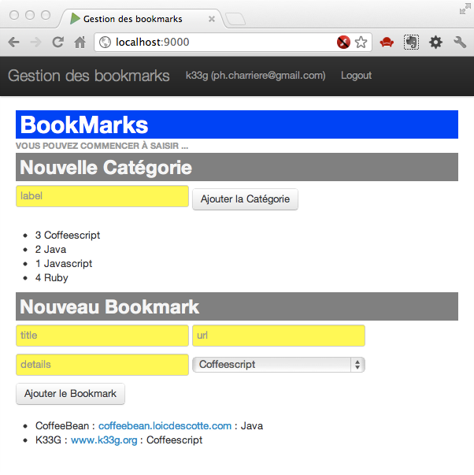
Oui je sais, c'est moche !
Entrainez vous maintenant, vous verrez, cela devient intéressant de faire du css ;).